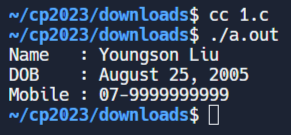
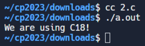
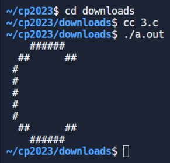
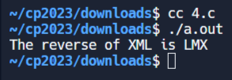
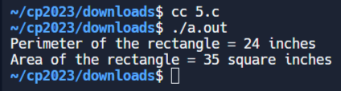
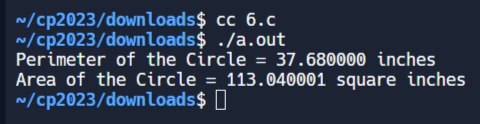
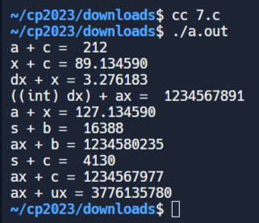
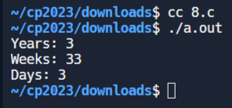
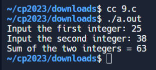
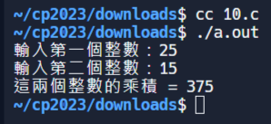

w15 <<
Previous Next >> c_ex
ANSIC
1.編寫一個 C 程式來列印您的姓名、出生日期和手機號碼。
#include <stdio.h>
int main()
{
// Print Name
printf("Name : Youngson Liu\n");
// Print Date of Birth
printf("DOB : August 25, 2005\n");
// Print Mobile Number
printf("Mobile : 07-9999999999\n");
// Indicate successful execution
return(0);
}

2.編寫一個C 程式來取得您正在使用的C 版本。
#include <stdio.h>
int main(int argc, char** argv) {
// Check for C standard version
#if __STDC_VERSION__ >= 201710L
printf("We are using C18!\n");
#elif __STDC_VERSION__ >= 201112L
printf("We are using C11!\n");
#elif __STDC_VERSION__ >= 199901L
printf("We are using C99!\n");
#else
printf("We are using C89/C90!\n");
#endif
// Indicate successful execution
return 0;
}

3.寫一個 C 程序，使用哈希 (#) 列印一個區塊 F，其中 F 的高度為 6 個字符，寬度為 5 個和 4 個字符。並且還列印一個非常大的“C”。
#include <stdio.h>
int main()
{
// Print top line of pattern
printf(" ######\n");
// Print second line of pattern
printf(" ## ##\n");
// Print lines 3 to 7 of pattern
printf(" #\n");
printf(" #\n");
printf(" #\n");
printf(" #\n");
printf(" #\n");
// Print bottom line of pattern
printf(" ## ##\n");
// Print last line of pattern
printf(" ######\n");
return(0);
}

4.寫一個C 程序，反向列印下列字元。
#include <stdio.h>
int main()
{
// Declare and initialize character variables
char char1 = 'X';
char char2 = 'M';
char char3 = 'L';
// Print the original and reversed characters
printf("The reverse of %c%c%c is %c%c%c\n",
char1, char2, char3,
char3, char2, char1);
return(0);
}

5.寫一個 C 程式來計算高 7 英吋、寬 5 英吋的矩形的周長和麵積。
#include <stdio.h>
/*
Variables to store the width and height of a rectangle in inches
*/
int width;
int height;
int area; /* Variable to store the area of the rectangle */
int perimeter; /* Variable to store the perimeter of the rectangle */
int main() {
/* Assigning values to height and width */
height = 7;
width = 5;
/* Calculating the perimeter of the rectangle */
perimeter = 2*(height + width);
printf("Perimeter of the rectangle = %d inches\n", perimeter);
/* Calculating the area of the rectangle */
area = height * width;
printf("Area of the rectangle = %d square inches\n", area);
return(0);
}

6.寫一個 C 程式來計算給定半徑的圓的周長和麵積。
#include <stdio.h>
int main() {
int radius; /* Variable to store the radius of the circle */
float area, perimeter; /* Variables to store the area and perimeter of the circle */
radius = 6; /* Assigning a value to the radius */
/* Calculating the perimeter of the circle */
perimeter = 2 * 3.14 * radius;
printf("Perimeter of the Circle = %f inches\n", perimeter);
/* Calculating the area of the circle */
area = 3.14 * radius * radius;
printf("Area of the Circle = %f square inches\n", area);
return(0);
}

7.寫一個C 程式來顯示多個變數。
#include <stdio.h>
int main()
{
int a = 125, b = 12345; /* Declare and initialize integer variables */
long ax = 1234567890; /* Declare and initialize long integer variable */
short s = 4043; /* Declare and initialize short integer variable */
float x = 2.13459; /* Declare and initialize floating-point variable */
double dx = 1.1415927; /* Declare and initialize double precision variable */
char c = 'W'; /* Declare and initialize character variable */
unsigned long ux = 2541567890; /* Declare and initialize unsigned long integer variable */
/* Various arithmetic operations and type conversions */
printf("a + c = %d\n", a + c);
printf("x + c = %f\n", x + c);
printf("dx + x = %f\n", dx + x);
printf("((int) dx) + ax = %ld\n", ((int) dx) + ax);
printf("a + x = %f\n", a + x);
printf("s + b = %d\n", s + b);
printf("ax + b = %ld\n", ax + b);
printf("s + c = %hd\n", s + c);
printf("ax + c = %ld\n", ax + c);
printf("ax + ux = %lu\n", ax + ux);
return 0;
}

8.編寫一個 C 程序，將指定的日期轉換為年、週和日。
#include <stdio.h>
int main()
{
int days, years, weeks;
days = 1329; // Total number of days
// Converts days to years, weeks and days
years = days/365; // Calculate years
weeks = (days % 365)/7; // Calculate weeks
days = days - ((years*365) + (weeks*7)); // Calculate remaining days
// Print the results
printf("Years: %d\n", years);
printf("Weeks: %d\n", weeks);
printf("Days: %d \n", days);
return 0;
}

9.寫一個 C 程序，接受使用者提供的兩個整數併計算這兩個整數的和。
#include <stdio.h>
int main() {
int x, y;
int result1, result2; // 用于存储 scanf 的返回值
// 获取第一个整数
printf("Input the first integer: ");
result1 = scanf("%d", &x);
if (result1 != 1) {
printf("Error: Please enter an integer.\n");
return 1;
}
// 获取第二个整数
printf("Input the second integer: ");
result2 = scanf("%d", &y);
if (result2 != 1) {
printf("Error: Please enter an integer.\n");
return 1;
}
// 计算并输出它们的和
printf("Sum of the two integers = %d\n", x + y);
return 0;
}

10.寫一個 C 程序，接受使用者提供的兩個整數併計算這兩個整數的乘積。
#include <stdio.h>
int main() {
int x, y;
int result_x, result_y; // 用於儲存 scanf 的返回值
// 獲取第一個整數
printf("輸入第一個整數：");
result_x = scanf("%d", &x);
if (result_x != 1) {
printf("錯誤：請輸入整數。\n");
return 1;
}
// 獲取第二個整數
printf("輸入第二個整數：");
result_y = scanf("%d", &y);
if (result_y != 1) {
printf("錯誤：請輸入整數。\n");
return 1;
}
// 計算並輸出它們的乘積
printf("這兩個整數的乘積 = %d\n", x * y);
return 0;
}

w15 <<
Previous Next >> c_ex